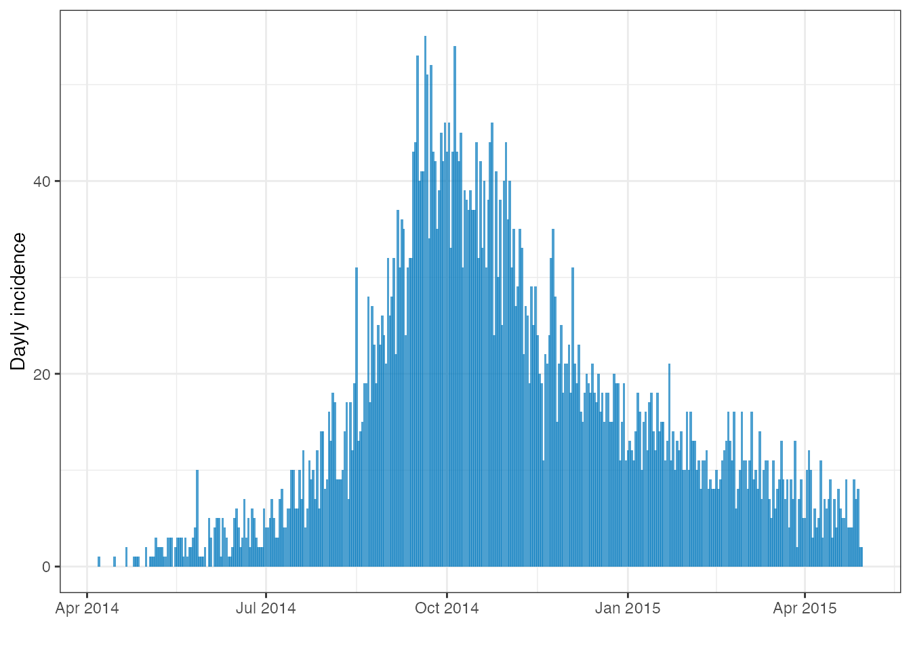
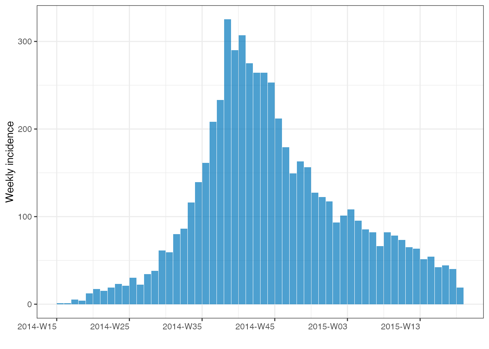
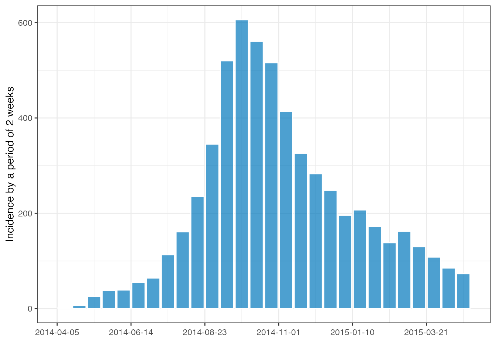
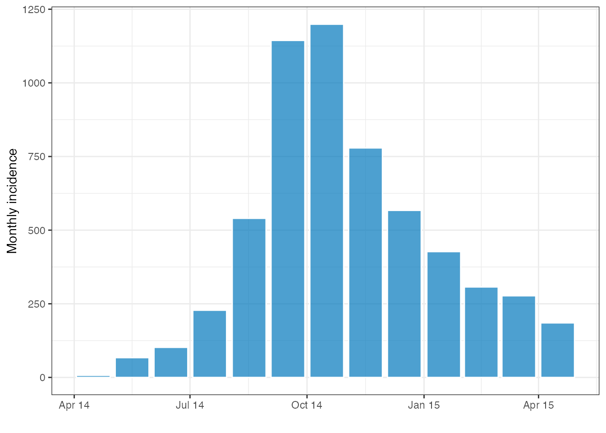
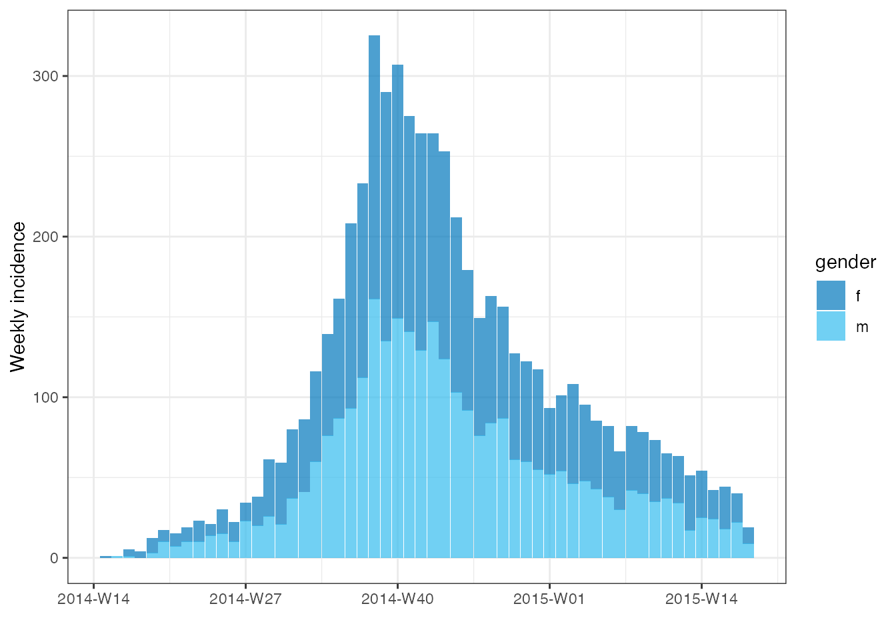
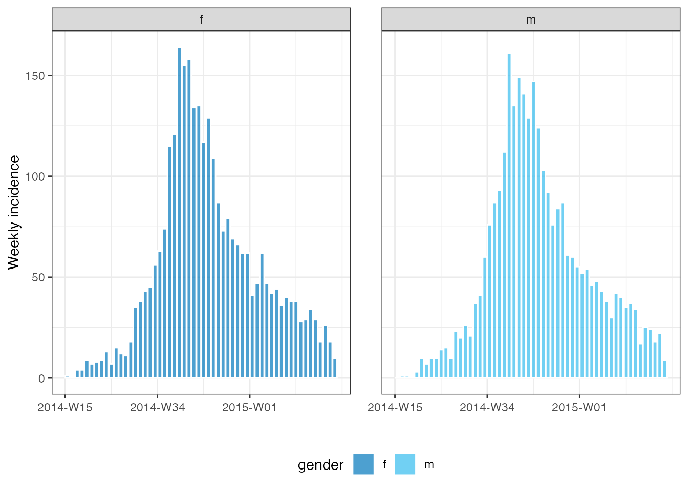
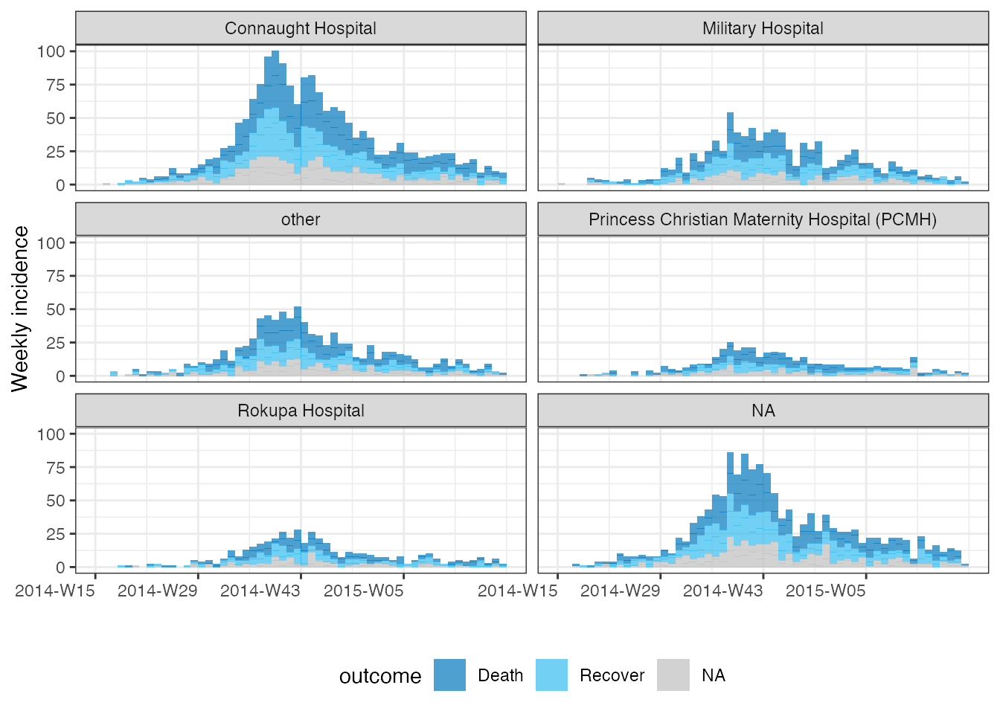

vignettes/Introduction.Rmd
Introduction.Rmdincidence implements functions and classes to compute, handle and visualise incidences from linelist data. This vignette provides an introduction to current features and is more extensive than the overview provided in README.md.
You can install the current version of the package from CRAN with:
install.packages("incidence2")The development version can be installed from GitHub with:
if (!require(remotes)) {
install.packages("remotes")
}
remotes::install_github("reconhub/incidence2", build_vignettes = TRUE)The main features of the package include:
incidence(): compute incidence from both linelist and pre-aggregated datasets; any fixed time interval can be used; the returned object is a tibble subclass called incidence2.
plotting functions plot() and facet_plot(): these functions return customised ggplot2 plots of incidence2 objects (see plot.incidence2() for details).
Compatible with dplyr for data manipulation. (see vignette("handling_incidence_objects") for more details).
regroup(): regroup incidence from different groups into one global incidence time series.
cumulate(): computes cumulative incidence over time from an incidence() object.
Conversion functions:
as.data.frame(): converts an incidence() object into a data.frame.
as_tibble(): converts an incidence() object into a tibble.
Accessor functions: get_counts_name(), get_dates_name(), get_dates(), get_group_names(), get_interval(), get_timespan() and get_n().
This example uses the simulated Ebola Virus Disease (EVD) outbreak from the package outbreaks. We will compute incidence for various time steps and illustrate how to easily plot the data.
library(outbreaks)
library(incidence2)
dat <- ebola_sim_clean$linelist
class(dat)
#> [1] "data.frame"
str(dat)
#> 'data.frame': 5829 obs. of 11 variables:
#> $ case_id : chr "d1fafd" "53371b" "f5c3d8" "6c286a" ...
#> $ generation : int 0 1 1 2 2 0 3 3 2 3 ...
#> $ date_of_infection : Date, format: NA "2014-04-09" ...
#> $ date_of_onset : Date, format: "2014-04-07" "2014-04-15" ...
#> $ date_of_hospitalisation: Date, format: "2014-04-17" "2014-04-20" ...
#> $ date_of_outcome : Date, format: "2014-04-19" NA ...
#> $ outcome : Factor w/ 2 levels "Death","Recover": NA NA 2 1 2 NA 2 1 2 1 ...
#> $ gender : Factor w/ 2 levels "f","m": 1 2 1 1 1 1 1 1 2 2 ...
#> $ hospital : Factor w/ 5 levels "Connaught Hospital",..: 2 1 3 NA 3 NA 1 4 3 5 ...
#> $ lon : num -13.2 -13.2 -13.2 -13.2 -13.2 ...
#> $ lat : num 8.47 8.46 8.48 8.46 8.45 ...To compute daily incidence we must pass observation data in the form of a data.frame or tibble to the incidence(). We must also pass the name of a date variable in the data that we can use to index the input:
We compute the daily incidence:
i <- incidence(dat, date_index = date_of_onset)
i
#> An incidence2 object: 389 x 2
#> [5829 cases from days 2014-04-07 to 2015-04-30]
#> [interval: 1 day]
#> [cumulative: FALSE]
#>
#> date count
#> <date> <int>
#> 1 2014-04-07 1
#> 2 2014-04-08 0
#> 3 2014-04-09 0
#> 4 2014-04-10 0
#> 5 2014-04-11 0
#> 6 2014-04-12 0
#> 7 2014-04-13 0
#> 8 2014-04-14 0
#> 9 2014-04-15 1
#> 10 2014-04-16 0
#> # … with 379 more rows
summary(i)
#> An incidence2 object: 389 x 2
#> 5829 cases from days 2014-04-07 to 2015-04-30
#> interval: 1 day
#> cumulative: FALSE
#> timespan: 389 days
plot(i)
The daily incidence is quite noisy, but we can easily compute other incidence using larger time intervals:
# weekly, starting on Monday (ISO week, default)
i_weekly <- incidence(dat, date_index = date_of_onset, interval = "1 week")
plot(i_weekly)
# bi-weekly, starting on Saturday
i_biweekly <- incidence(dat, date_index = date_of_onset, interval = "2 saturday weeks")
plot(i_biweekly, color = "white")
## monthly
i_monthly <- incidence(dat, date_index = date_of_onset, interval = "1 month")
plot(i_monthly, color = "white")
incidence() can also aggregate incidence by specified groups using the groups argument. For instance, we can compute incidence by gender and plot with both the plot() function for a single plot and the facet_plot() function for a multi-faceted plot across groups:
i_weekly_sex <- incidence(dat, date_index = date_of_onset,
interval = "1 week", groups = gender)
i_weekly_sex
#> An incidence2 object: 112 x 4
#> [5829 cases from days 2014-04-07 to 2015-04-27]
#> [interval: 1 week]
#> [cumulative: FALSE]
#>
#> bin_date week_group gender count
#> <date> <aweek> <fct> <int>
#> 1 2014-04-07 2014-W15 f 1
#> 2 2014-04-07 2014-W15 m 0
#> 3 2014-04-14 2014-W16 f 0
#> 4 2014-04-14 2014-W16 m 1
#> 5 2014-04-21 2014-W17 f 4
#> 6 2014-04-21 2014-W17 m 1
#> 7 2014-04-28 2014-W18 f 4
#> 8 2014-04-28 2014-W18 m 0
#> 9 2014-05-05 2014-W19 f 9
#> 10 2014-05-05 2014-W19 m 3
#> # … with 102 more rows
summary(i_weekly_sex)
#> An incidence2 object: 112 x 4
#> 5829 cases from days 2014-04-07 to 2015-04-27
#> interval: 1 week
#> cumulative: FALSE
#> timespan: 386 days
#>
#> 1 grouped variable
#>
#> gender count
#> <fct> <int>
#> 1 f 2934
#> 2 m 2895
# A singular plot
plot(i_weekly_sex, fill = gender)
# a multi-facet plot
facet_plot(i_weekly_sex, fill = gender, color = "white", )
There is no limit to the number of groups that we group by and this allows us to both facet and fill by different variables:
inci <- incidence(dat, date_index = date_of_onset,
interval = "1 week", groups = c(outcome, hospital, gender))
inci %>%
facet_plot(facets = hospital, fill = outcome, n_breaks = 4, nrow = 3)
#> plot() can only stack/dodge by one variable.
#> For multi-facet plotting try facet_plot()